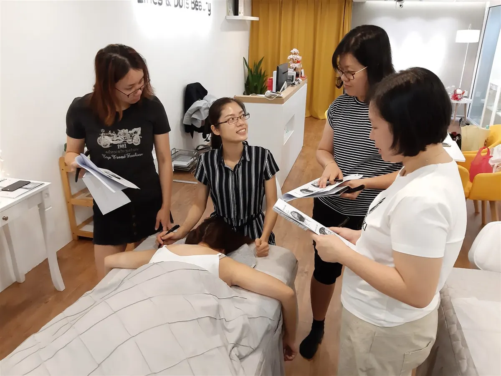

The Bojin Journal · Brows & Forehead
A tense forehead you only notice at the end of the day?

Your forehead has been working all day without asking permission. When you focus on a screen, frown at small print, or hold quiet stress, the muscles across your brow and forehead stay lightly clenched for hours. You don't feel it happening, so you only notice the tightness at night. A few slow, well-placed minutes can help those muscles let go and leave you looking a little more rested.
Why does my forehead feel so tight by the end of the day?
Your forehead is one of the most expressive areas of your face, and that means it rarely gets to rest. Every time you concentrate, squint at a phone, lift your brows in conversation, or hold a bit of worry, the muscles in your brow and across your forehead engage. Because each of those movements is small, you don't register them one by one. They simply add up over the hours until, by evening, the whole area feels tight and a little sore.
Screens make it worse. When your eyes work hard to focus, the muscles around your brows tend to draw in and stay there, and the skin in between holds that tension without you knowing. If it's your eyes themselves that feel the most tired by mid-afternoon, a 2-minute desk reset targets that spot directly, right at your desk. Add a long, demanding day and it's normal for your forehead to feel tense long before you'd ever call it a headache.
None of this is your fault, and it doesn't mean anything is wrong. It's what a busy, focused face does. Tension you gather slowly can also be released slowly, with a calm end-of-day habit. If it's the visible lines themselves that worry you more than the tightness, that's its own question worth a straight answer: see forehead lines getting deeper?
How the Bojin Method helps a tense forehead
First, what bojin is. If you already know gua sha, you have a head start, because bojin grew from the same family of Chinese hands-on face care, so it will feel familiar. It's still its own deliberate method. What makes it work is three things: the order you work in, the angle you hold the tool, and the exact spot you're working.
The traditional tool is a bojin stick, a slim, polished stainless steel tool shaped to follow the curves of your face, and you use its rounded edge. You can start with clean fingertips or a smooth-edged tool you already own while you learn the moves, but the stick is what the method was built around. The pressure is not the barely-there touch people assume, nor is it forceful. It's the right, comfortable pressure for you, firm enough to be felt, never enough to hurt or drag your skin.
If working on your forehead has never done much for you before, it wasn't your fault. Most of us were handed a tool with no method attached, with no one to show us the order to follow, the angle to hold, or the exact place to work. Add that method, and the same few minutes across a tense brow feel different.
Across your forehead, comfortable pressure matters more than hard or light. Hold the right angle, and work in the right order and place. That order, angle, and placement is the method.

The 5-minute end-of-day forehead reset
Use your bojin stick or clean fingertips, and add a little oil or cream so nothing drags. Work in order, follow the angle described, and keep the pressure comfortable the whole way through, not featherlight and not forceful. This is a calming wind-down, so go slowly and breathe.

Warm and settle first
Rest your palms flat over your brows for a few slow breaths, then smooth your hands upward from the brows to the hairline a couple of times. This warms the area and tells your face it's time to let go.
Read your face first
Gently press along your forehead and brows and notice where it feels tightest, often right between the brows or along the ridge. That tightest spot tells you where to spend a little more time, and it sets the order you'll work in.
Ease the center between the brows
With the rounded edge of your bojin stick or a fingertip, work the spot between your brows using small, slow movements upward and outward. Keep the angle gentle against the skin and the pressure comfortable, releasing rather than pushing.
Sweep across the forehead and out to the temples
Glide from the center of your forehead outward toward each temple, following the natural width of the brow line. Move in the same direction each time and let the angle stay flat and easy, so the whole band of tension can soften.
Finish down the sides of your neck
This is the step people skip. Sweep gently from just behind your ears down the sides of your neck a few times, so any fluid you've moved has a path to drain and your whole face feels lighter.
What can I expect?
Most women notice their forehead simply feels calmer and less tight afterward, the way your shoulders drop when someone rubs them. Your brow may look a little smoother and more relaxed, your face a touch brighter and more rested, and the evening tension easier to set down. Done as a regular wind-down, it's a small, pleasant way to close out a screen-heavy day and feel a bit more like yourself at the mirror.
Be honest with yourself about the limits, too. This is gentle self-care, not medical care, and it won't remove lines or change the shape of your face. Any softening is gentle and everyday, and it fades as tension gathers again, which is why it's a habit rather than a fix. And please, if you get forehead pain often, if a headache is severe, sudden, or one-sided, or if anything feels wrong, see your doctor. Frequent or severe headaches deserve a real visit, not a massage.
A tense forehead is just a tired, hardworking part of you asking to rest. Give it five calm minutes at the end of the day, in the right order and at a comfortable pressure, and you may be surprised how much lighter you feel.
Quick answers
Can I use a gua sha stone instead of a bojin stick?
You can start with a gua sha stone or clean fingertips while you learn the moves. A bojin stick is the traditional tool, shaped to follow your forehead, but the real difference isn't the object in your hand. It's working in the right order, at the right angle and spot, with a comfortable pressure.
How hard should I press on my forehead?
Aim for the right, comfortable pressure for you, firm enough that you clearly feel it, never enough to hurt or drag your skin. Too light does nothing and too hard is wrong, so let it feel just right and let the angle do the work.
Will this get rid of my forehead lines?
No, and anyone who promises that isn't being honest with you. This is calming tension relief, not a treatment for lines. It can leave your forehead looking a little smoother and more rested in the moment, but it won't remove lines or change how your face ages.
How often should I do this?
As often as it feels good, and it's especially nice at the end of a screen-heavy day when tension has built up. A few minutes most evenings is plenty; there's no need to overdo it, and gentle and regular beats hard and occasional.
See the forehead reset in real time
Want to feel the difference for yourself? Watch the free 3-minute video, where I walk you through the exact order to follow, the angle to hold, and the precise spots to work, so you can feel the right comfortable pressure and release your forehead tonight.
Watch the free 3-min videoYu-Ting Lan is a Taiwan-based international bojin instructor and the founder of Héhé Studio. She has taught her bojin method to more than a thousand students, from complete beginners to grandmothers, across Taiwan, Hong Kong, and Malaysia.